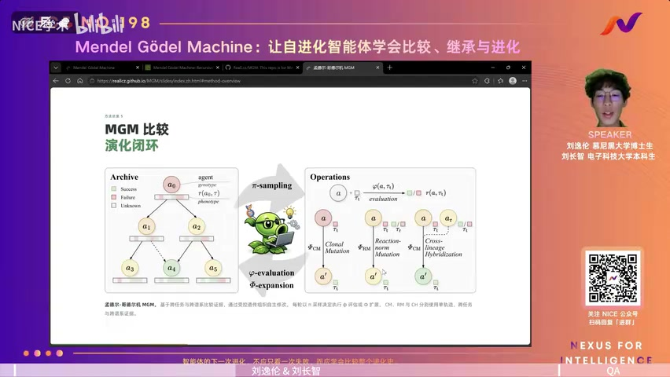
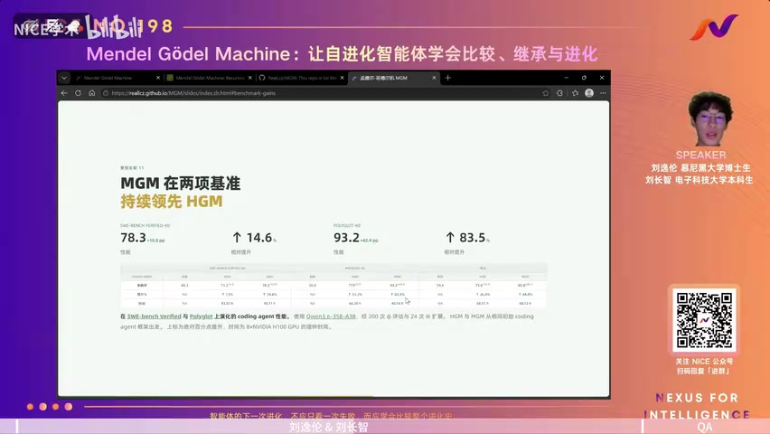
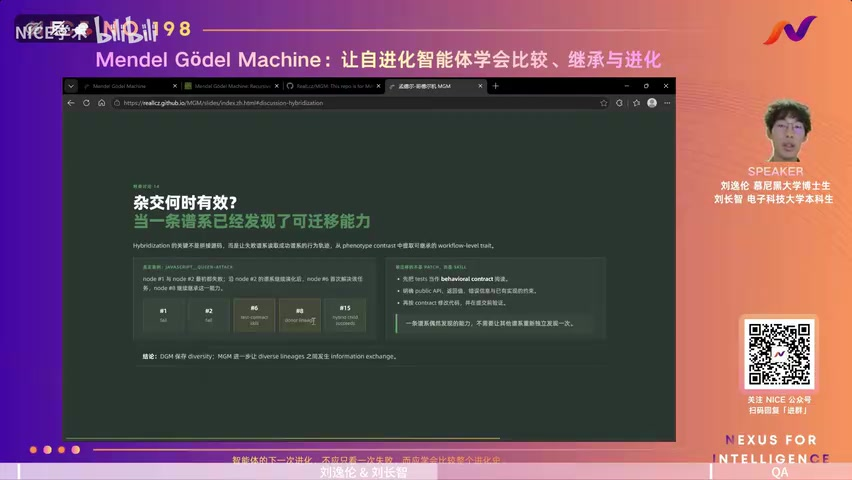
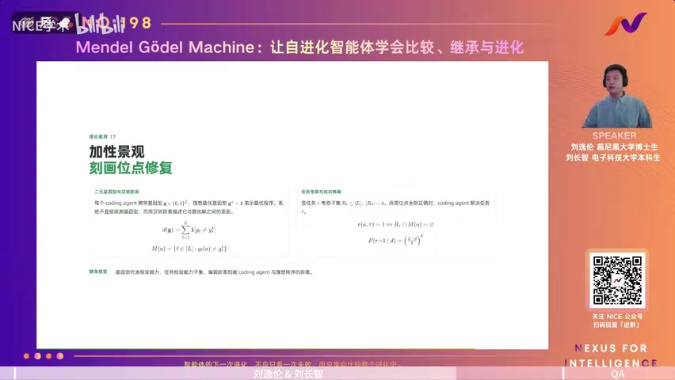

01核心结论
MGM 的核心不是让大模型“凭空自我升级”，而是让 coding agent 把进化档案中的跨任务、跨谱系历史变成对照证据，从而更准确地判断该修什么、该继承什么；它改进的是 agent 的提示词、工具与工作流（scaffold），不是模型权重。
02核心观点
- 现有自进化的瓶颈不只在搜索，还在每次修改的质量。 DGM 把单线自修改改成开放式进化树，HGM 改善了“下一步扩展哪个节点”，但节点被选中后仍常根据单次失败轨迹改代码。一次失败可能只是偶然，容易导致误诊和破坏性修改。（00:01:19–00:11:52）
- 进化档案不应只是排行榜，而应是对照数据集。 每个 agent 在多个任务上的运行轨迹，以及多个 agent 在同一任务上的成功/失败，都包含比单个分数更丰富的诊断信号。（00:12:07–00:16:56）
- 比较证据的价值在于降低诊断不确定性。 如果同一个 agent 在多个任务上反复表现出“没有验证”“丢失长上下文信息”等模式，更可能说明 scaffold 存在系统性缺陷；如果另一个谱系在同一任务上成功，则两者差异可提示应迁移的行为。（00:14:46–00:16:56）
- “遗传”发生在行为与工作流层，而不是参数层。 MGM 不训练 LLM 权重，也不是直接把两个 agent 的源文件拼接起来；目标 agent 阅读对照轨迹，自行提炼并实现可迁移的策略。论文方法部分对此有明确说明。

03内容脉络
1. 从理论 Gödel Machine 到经验型自修改（00:01:19–00:09:04）
经典 Gödel Machine 要求系统在自我改写前证明修改能提高未来效用，理论优雅但现实中的 agent、工具和任务很难完全形式化。LLM 与 coding agent 让“修改 agent 本身”变成普通编码任务，于是可用 benchmark 评测代替形式证明，形成“评估 → 诊断 → 修改 → 再评估”的工程闭环。
DGM 维护开放式进化树，允许从旧节点重新分叉，避免单线进化把早期错误永久继承；HGM 再用树搜索思想区分“当前高分”与“未来仍有进化潜力”。MGM 接着追问：选好父节点以后，怎样让这一次修改本身更可靠？

2. 三种自修改算子（00:17:25–00:24:24）
- Clonal Mutation（克隆突变）：同一 agent、单条失败轨迹。它是传统做法，也负责在进化早期积累最初的数据。
- Reaction-norm Mutation（反应规范突变）：同一 agent、多个不同任务。通过重复或对照的失败模式，寻找 agent 级的系统性缺陷。
- Cross-lineage Hybridization（跨谱系杂交）：同一任务、不同 agent。若一个成功一个失败，就把成功者轨迹当作对照；若都失败，则比较互补的失败模式。
此外，MGM 维护一个全局失败任务池，提高不同谱系碰到相同诊断任务的概率，以制造可比较的任务重叠；这些轨迹原本就来自正常评测，因此两种比较算子不额外增加任务评测次数。
3. 实验结果（00:24:37–00:28:03）
在相同的 200 次评测、24 次扩展预算下，使用 Qwen3.6-35B-A3B：
| Benchmark | 初始 scaffold | HGM | MGM |
|---|---|---|---|
| SWE-bench Verified-60 | 68.3% | 73.3% | 78.3% |
| Polyglot-60 | 50.8% | 77.9% | 93.2% |
完整 Polyglot-225 的事后评测中，MGM 解出 210/225，准确率 93.3%。跨基准零样本迁移时，Polyglot 上演化的 scaffold 在 SWE-bench Pro / Multilingual 上取得 26.7% / 55.0%，均优于初始 scaffold 与 HGM。Qwen 上演化的 scaffold 换成 DeepSeek-V4-Flash / Pro 后，在 SWE-bench Verified-60 上为 66.7% / 75.0%，也高于 HGM 对应结果。论文实验表格给出了完整设定和数字。

4. 为什么跨谱系继承有效（00:28:03–00:33:15）
案例 javascript__queen-attack 中，一条谱系先学会“把测试视为严格行为契约”的工作流：实现前先检查公开 API、预期值和错误消息。跨谱系杂交让另一条原本失败的分支继承这一能力，减少了各分支独立重复发现同一技巧的浪费。
这说明所谓“通用能力”不应只是 prompt 里写一句“提高泛化”，而应满足操作性定义：脱离最初任务后，仍能作为可复用 procedure 在其他任务或 backbone 上工作。

5. 理论解释（00:37:24–00:46:37）
论文把 agent scaffold 简化为二进制 genotype 向量，每一位代表一个最小工作流能力或实现选择；任务只检查其中一组位点，只有所有相关位点正确才成功。agent 不能直接观察自身错误位点，只能从任务成败和轨迹反推。
单条失败轨迹只能给出一个较大的可疑位点集合；同一 agent 的多任务比较可用交集缩小范围；同一任务的成功/失败 agent 对照又能排除与失败无关的位点。这被称为 diagnostic compression（诊断压缩）：不是让 editor 本身变强，而是给它一个更小、更干净的缺陷候选集。在“比较证据可靠”的假设下，两种新算子的有效修复概率严格高于单轨迹突变。

04综合分析
最重要的贡献：把“记忆”升级为“实验设计”
普通 agent memory 常做两件事：检索类似案例，或积累成功模板。MGM 更进一步：它主动寻找控制变量——固定 agent 比任务，或固定任务比 agent。这样 archive 不再只是经验仓库，而近似一套自动化 A/B 诊断系统。
这也是这篇工作的普适价值。它不只适用于 coding agent；只要系统具有“可保留的版本、可重复的评测、可比较的轨迹”，都可以问：
- 哪些错误跨场景重复出现，说明是系统性缺陷？
- 哪个相邻版本在同一场景成功，差异中有什么可迁移策略？
- 改进能否离开原任务继续工作，而不是只修一道题？
“Mendel”比“Gödel”更贴切
“Gödel Machine”容易让人联想到严格证明和无限制自我重写，但这项工作的实际机制更接近有预算、可回滚、受评测约束的程序搜索。它没有证明修改对未来所有任务都有益，而是在基准上经验验证。真正独特的部分是“孟德尔式”对照与跨谱系继承。
结果值得重视，但不能直接读成“AI 已会自主进化”
实验说明：在作者的固定预算和基准子集上，比较证据显著提高了 scaffold 搜索效率与迁移表现。这是有价值的工程证据，但仍有四层边界：
- 理论模型很简化。 加性 fitness landscape 忽略真实代码中强烈的模块交互、依赖冲突和非线性副作用；“可靠比较证据”本身也是关键前提。
- 编辑器仍可能误判。 更好的证据不保证 LLM 能正确理解，更不保证修改可维护。视频中特别指出，coding 能力强但通用推理弱的模型，未必更会自我改进。（00:33:15–00:35:59）
- 数据依赖与冷启动明显。 archive 小、任务重叠少或失败样本不足时，两种比较算子难以工作，MGM 会退化成普通单轨迹方法。
- 证据规模仍有限且成本高。 主要进化实验使用固定 60 题子集和有限随机种子；一次匹配预算的运行仍需约 40–96 小时、8 张 H100。论文也承认随机重启和任务抽样方差尚未充分覆盖。论文 Limitations
因此，“超过 GPT-5”之类说法应谨慎阅读：它指特定 Polyglot 配置下的 benchmark 数字，并不等于整体能力、可靠性或真实软件工程水平全面超过。
05实践建议、问答与研究边界
如果你在设计能持续改进的 agent，最值得借鉴的不是整套进化树，而是以下四个工程原则：
- 保存完整轨迹，不只保存分数。 工具调用、环境反馈、验证步骤和失败原因都是下一轮诊断资产。
- 先找重复失败，再改全局工作流。 单一失败优先做局部修复；跨任务重复失败才值得升级为 scaffold 级规则。
- 建立同题异解对照。 让失败版本对比成功版本的行动序列，从“成功答案”中抽取可迁移 procedure，而不是复制最终代码。
- 把泛化测试设为继承门槛。 新策略至少应在未参与修改的任务、不同仓库或不同模型上复测；否则只是 benchmark patch。
Q&A 要点（00:47:04–00:56:20）
- 会不会 benchmark overfitting？ 作者用跨 benchmark 与跨 backbone 迁移回应；结果是正向证据，但不是完全排除污染或过拟合。
- 算 RSI 还是 automated agent design？ 两者不冲突；作者把“修改主体和被修改对象属于同一系统”视为 RSI 的关键。
- 是否属于多智能体进化？ 严格说最终被修改与交付的是单个 coding agent；archive 含多个版本并承担不同角色，但并非典型的多智能体协作解题。
- 未来是一个通用 harness 还是每个任务一个专用 harness？ 作者认为两者都会存在：通用 scaffold 追求覆盖面，专用 scaffold 追求特定任务的效率与上限。
研究边界
- 改进对象有限。MGM 优化的是提示词、工具与工作流组成的 scaffold，并不直接更新基础模型权重。
- 理论假设较强。诊断压缩依赖可比较任务、可靠轨迹与足够大的进化档案；冷启动或任务重叠不足时，比较算子的优势会减弱。
- 实验结论需限定范围。现有数字来自论文设定与作者报告，尚不能外推为智能体在真实软件工程中的普遍自主进化能力。